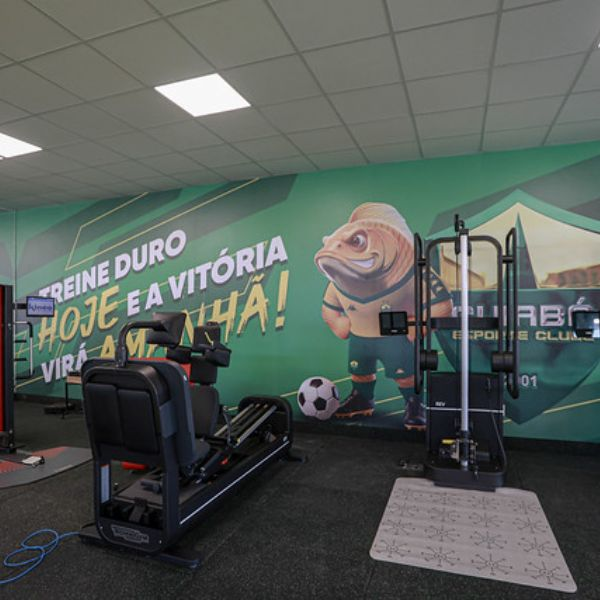

Entendido! Aqui está apenas o texto da notícia de esporte de Cuiabá, focado no Cuiabá Esporte Clube, sem as tags HTML: Dourado Encerra Preparação e Embarca para Confronto Decisivo Contra o América-MG pela Série B O Cuiabá Esporte Clube finalizou na manhã desta segunda-feira (10) a preparação no CT Manoel Dresch, visando o confronto crucial contra o América-MG. O jogo, válido pela 36ª rodada do Campeonato Brasileiro da Série B, acontece fora de casa e é visto como uma 'final' pela comissão técnica. Após um resultado negativo na última rodada, a equipe do Dourado realizou trabalhos táticos intensos, com foco especial na transição rápida e nas jogadas de bola parada. O técnico interino, Eduardo Barros, enfatizou a necessidade de concentração máxima para garantir pontos nesta fase final da competição, onde a tabela está apertada tanto na briga pelo acesso quanto na fuga do Z-4. A delegação embarca no período da tarde, buscando se adaptar rapidamente ao clima do adversário. A expectativa é que o time mantenha a postura ofensiva que demonstrou nos últimos jogos em casa.
